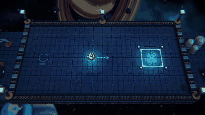
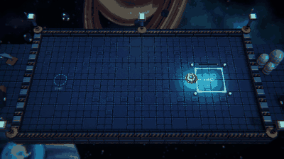
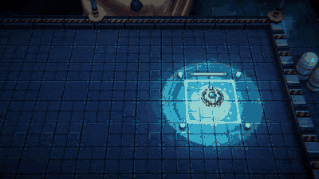

<!doctype html><html lang="ja"><meta charset="utf-8"><title>作品研究｜すべる宇宙駐車場</title>
<style>@page{size:320mm 180mm;margin:0}*{box-sizing:border-box}body{margin:0;padding:4mm 10mm;background:#0c1226;color:#eff4ff;font:15px/1.55 Meiryo,sans-serif;print-color-adjust:exact}header{border-bottom:1px solid #526483;padding-bottom:3mm;display:flex;align-items:baseline;justify-content:space-between}small,b{color:#6ee4d4}h1,h2,p{margin:0}h1{font-size:32px}main{display:grid;grid-template-columns:1.65fr 1fr;gap:7mm;margin:2mm 0}.still{margin:0;position:relative}.still img,section img{width:100%;display:block}.pin{position:absolute;left:51%;top:47%;background:#0c1226;color:white;border:2px solid #6ee4d4;border-radius:50%;width:26px;height:26px;text-align:center}.pin+span{left:74%;top:34%}h2{font-size:23px;margin:2mm 0}aside p{margin:1mm 0 4mm}.sequence{display:grid;grid-template-columns:repeat(3,1fr);gap:5mm}.sequence figure{margin:0;display:flex;align-items:center;gap:3mm}.sequence img{width:54%}figcaption{font-size:13px}footer{border-top:1px solid #526483;margin-top:2mm;padding-top:1mm;color:#b6c6d8}a{color:#89beff}</style>
<header><h1>すべる宇宙駐車場</h1><b>慣性アクション　/　App Store公開</b></header>
<main><figure class="still"><span class="pin">1</span><span class="pin">2</span></figure><aside><small>遊びの判断</small><h2>枠に着く前に、止め始める。</h2><p><b>1　宇宙船</b><br>指を離しても船は進む。今の速さと残りの距離を見比べ、逆噴射に切り替える。</p><p><b>2　駐車枠</b><br>枠に向かうだけでは通り過ぎてしまう。狙うのは、枠の中で止まれる進み方。</p><b>私の担当　/　4人制作</b><p>企画立案・整理、画像作成、SE。</p></aside></main>
<section class="sequence"><figure><figcaption>01　滑走<br>枠までの距離を見る</figcaption></figure><figure><figcaption>02　接近<br>進む量を調整する</figcaption></figure><figure><figcaption>03　到達<br>枠内の船を確認</figcaption></figure></section>
<footer>同じプレイ映像の連続カット。番号は企画説明用の注釈です。　<a href="https://unityroom.com/games/sliding-space-parking">unityroomで遊ぶ ↗</a></footer></html>
